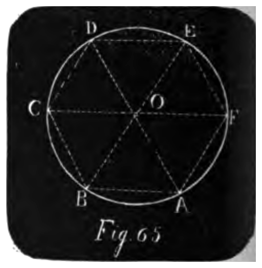
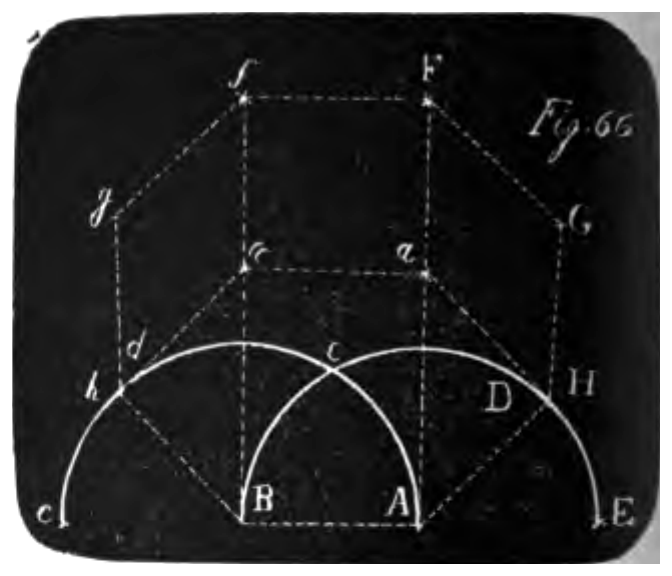
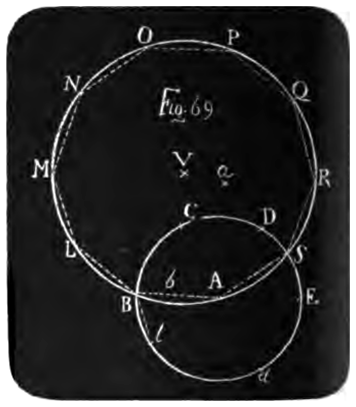

§§ 135–142: Costruire poligoni regolari sopra un dato lato (Fig. 63–70)¶
135. Prob. Sopra un dato lato \(AE\) costruire un triangolo equilatero (Fig. 1).
Sol. Si trovi il punto \(D\) come nel § 1. Sarà \(ADE\) il triangolo cercato.
136. Prob. Sopra un dato lato \(AB\) costruire un quadrato.
Sol. Si trovino come al § 100 i due punti \(F, T\). Sarà \(ABTF\) il quadrato cercato (fig. 43).
Dim. Essendosi ivi dimostrato essere la \(BT\) eguale e parallela ad \(FA\), e perciò perpendicolare ad \(AB\); anche la \(FT\) sarà parallela alla \(BA\) (33, lib. I). Quindi anche gli angoli \(BTF, AFT\) saranno retti (27, lib. I), e \(ABTF\) un quadrato (Def. 32, lib. I).
137. Prob. Sopra un dato lato \(AB\) costruire un pentagono regolare (Fig. 63).

Sol. I. Col raggio \(AB\) centro \(A\) si descriva la circonferenza \(BCDEd\), e si faccia ad \(AB = BC = CD = DE = Ed\). Si faccia a \(BD = Ba = Ea\). Si faccia poi ad \(Aa = Db = db\). Col centro \(B\),
f. 0100 · p. 75raggio \(BA\) si descriva l’arco indefinito \(ACL\). In esso si faccia ad \(Ab = AH = HP = PL\). Si faccia similmente nella circonferenza \(BCD\) ad \(Ab = BQ = QK = KN\). Coi centri \(L\) ed \(N\), e col raggio \(AB\) si segnino due archi, che si taglino in \(M\). Saranno i punti \(A, B, L, M, N\) vertici del pentagono regolare cercato.
Dim. L’angolo \(CBF\) (Fig. 61) del pentagono regolare \(BCDEF\) è misurato dalla metà dell’arco \(CDEF\) (20, lib. III). Essendo dunque quest’arco eguale a tre quinti della circonferenza; l’angolo \(CBF\) del pentagono è misurato da tre decimi. Ora gli archi \(AHPL\), \(BQKN\), che misurano gli angoli \(ABL\), \(BAN\), sono ciascuno tre decimi della circonferenza (§ 41). Sono dunque gli angoli \(ABL\), \(BAN\) gli angoli del pentagono regolare da costruirsi sopra \(AB\). Sono poi anche i tre lati \(AB, BL, AN\) eguali tra loro, cioè lati di esso pentagono. Confrontando dunque i punti \(L, B, A, N\) di questa Figura 63 coi punti \(C, B, F, E\) della Fig. 61, il triangolo \(LMN\) di questa Figura, avendo i lati eguali rispettivamente ai lati del triangolo \(CDE\) (Fig. 61), avrà anche gli angoli eguali (8, lib. I), e tutto coinciderà. Dunque ecc.
Sol. II. Descritta, come sopra, col raggio \(AB\), centro \(A\) la circonferenza \(BDd\) (fig. 64), e in essa fatto ad \(AB = BC = CD = DE = Ed\); e fatto a \(BD = Ba = Ea\); e fatto ad \(Aa = Db = db\); col raggio \(bE\), e col centro \(A\) si segni un arco, che passi per \(L\) ed \(M\). Collo stesso raggio \(bE\), e col centro \(B\) si tagli quest’arco in \(M\) e la circonferenza in \(N\). Finalmente collo stesso raggio, e col centro \(N\) si tagli l’arco \(LM\) in \(L\). Saranno i punti \(A, B, L, M, N\) vertici del pentagono regolare.
Dim. Si ha \((BE)^2 = (bE)^2 + (Bb)^2 + 2Bb \cdot bE\) (4, lib. II). Essendo poi l’angolo \(BNE\) nel semicerchio, si ha (31, lib. III, 47, lib. I) \((BE)^2 = (BN)^2 + (NE)^2\). Confrontando i due valori di \((BE)^2\), nei quali \((bE)^2 = (BN)^2\), risulta \((Bb)^2 + 2Bb \cdot bE = (NE)^2\). Essendo poi \(bE = bA + AE = Ab + AB\), si avrà \((Bb)^2 + 2Bb \cdot Ab +\)
f. 0101 · p. 76\(2Bb \cdot AB = (NE)^2\). Ma \(2Bb \cdot AB = 2(Ab)^2\) (§ 46). Dunque \((Bb)^2 + 2Bb \cdot Ab + (Ab)^2 + (Ab)^2 = (NE)^2\). Ma \((Bb)^2 + 2Bb \cdot Ab + (Ab)^2 = (AB)^2\). Dunque \((AB)^2 + (Ab)^2 = (NE)^2\). Sarà dunque \(NE\) il lato del pentagono iscritto nel cerchio \(BDd\) (§ 50) (10, lib. XIII); quindi essendo l’arco \(NE\) eguale a due decime della circonferenza, sarà l’arco \(BCN\) eguale a tre decime, e l’angolo \(BAN\) sarà l’angolo del pentagono regolare. Essendo poi la \(BN\) sottesa ai due lati \(BA, AN\) del pentagono regolare; sarà essa il lato del triangolo isoscele, che ha per base \(AB\) e ciascuno degli angoli alla base duplo dell’angolo al vertice (11, lib. IV). Saranno dunque anche i punti \(L\) ed \(M\) vertici del pentagono regolare.
138. Prob. Sopra un dato lato \(AB\) costruire un esagono regolare (Fig. 65).


Sol. Col raggio \(AB\), e coi centri \(A\) e \(B\) si segnino due archi, che si taglino in \(O\). Collo stesso raggio, e col centro \(O\) si descriva un cerchio, e nella sua circonferenza si faccia ad \(AB = BC = CD = DE = EF\). Sarà \(ABCDEF\) l’esagono regolare cercato.
Per la Dimostrazione vedi la 15, lib. IV.
139. Prob. Sopra un dato lato \(AB\) costruire un ottangolo regolare (Fig. 66).


Sol. I. Col raggio \(AB\), e coi centri \(A\) e \(B\) si descrivano le due semicirconferenze \(BCDE\), \(ACde\) (§ 64). Si faccia a \(CE = Ea = Ba = A\alpha = e\alpha\). Col raggio \(AB\), centro \(a\) si tagli l’arco \(DE\) in \(H\). Collo stesso raggio, e centro \(\alpha\) si tagli l’arco \(de\) in \(h\). Collo stesso raggio, e coi centri \(H\) ed \(h\) si segnino due archi, che passino per \(G\) e \(g\). Col
f. 0102 · p. 77raggio \(Ba\), e coi centri \(a\) ed \(\alpha\) si taglino questi archi in \(g\) e \(G\). Col raggio \(AB\), e coi centri \(G\) e \(g\) si segnino due archi, che passino per \(F\) ed \(f\). Col raggio \(Aa\), e coi centri \(a\) ed \(\alpha\) si taglino questi due archi in \(f\) ed \(F\). Saranno i punti \(A, B, h, g, f, F, G, H\) i vertici dell’ottagono regolare costruito sul lato \(AB\).
Dim. I lati \(AB, Bh, hg, gf, AH, HG, GF\) sono tutti eguali per costruzione. Ora se si consideri un ottagono regolare inscritto nel cerchio, si troverà, che ognuno dei suoi angoli alla circonferenza ha per base un arco eguale a sei ottavi di essa, e perciò è misurato da tre ottavi (20, lib. III). Si ha poi l’arco \(CH\) eguali a tre ottavi (§ 30). Dunque l’angolo \(BAH\) è dell’ottagono. Istessamente lo è l’angolo \(ABh\). Essendo poi le \(aA\), \(\alpha B\) perpendicolari alla \(AB\) (§ 27), saranno parallele tra loro (28, lib. I). Dunque la \(Ha\), che fa un angolo semiretto colla \(aA\) (§ 27), lo farà ancora colla \(\alpha B\) (27, lib. I); ma è semiretto anche \(hBa\); dunque \(aH\) è parallela ad \(hB\) (28, lib. I). Dunque anche \(aH\) è eguale e parallela alla \(HB\) (33, lib. I). Quindi l’angolo \(haH = hBH\) (34, lib. I). Ora l’angolo \(hBH = hBE - HBE = hBE - HAE\) (20, lib. III). Avrà dunque per misura \(\frac{3}{8} - \frac{1}{16}\) della circonferenza, cioè \(\frac{5}{16}\) di essa: dunque l’angolo \(Bha\), che insieme coll’angolo \(haH\) equivale a due retti (27, lib. I), avrà per misura \(\frac{3}{16}\) della circonferenza. Essendo poi nei due triangoli \(ahB\), \(ahg\) tutti i lati eguali tra loro; sarà l’angolo \(ahg = Bha\) (8, lib. I). Quindi l’angolo totale \(ghB\) avrà per misura \(\frac{3}{8}\) della circonferenza, e sarà angolo dell’ottagono. Istessamente lo sarà l’angolo \(AHG\). Sarà ancora l’angolo \(hga = hBa\). Ed avendo parimente gli angoli eguali tra loro i due triangoli \(gfa\), \(ABa\); sarà l’angolo \(fga = ABa\) (8, lib. I). Quindi l’angolo \(hgf\) è composto di due angoli eguali rispettivamente a due, che compongono l’angolo \(hBA\). Gli sarà dunque eguale, e quindi sarà angolo dell’ottagono. Istessamente lo sarà l’angolo \(HGF\). Saranno anche i punti \(f\) ed \(F\) vertici dell’ottagono come tutti gli altri.
Sol. II. Col raggio \(AB\), e coi centri \(A\) e \(B\) descritte come sopra le due semicirconferenze \(BCDE\), \(ACde\), e fatto a \(CE = Ea = Ba = A\alpha = e\alpha\); di nuovo col raggio \(AB\), e col centro \(a\) si segni un arco, che tagli l’arco \(DE\) in \(H\), e passi per \(F\). Collo
f. 0103 · p. 78stesso raggio, centro \(\alpha\) si segni un arco, che tagli l’arco \(de\) in \(h\), e passi per \(f\). Col raggio \(aA\), centro \(a\) si segni un arco, che passi per \(f\). Collo stesso raggio, centro \(\alpha\) si segni un arco, che passi per \(F\). Col raggio \(AB\), e coi centri \(H\) ed \(F\); \(h\) ed \(f\) si segnino degli archi, che si taglino in \(G\), e \(g\).
Dim. Essendo per la dimostrazione della Soluzione I le \(AB, a\alpha\) parallele ed eguali tra loro, come le due \(aA, \alpha B\), che fanno con quelle angoli retti; posto per brevità \(AB = 1\); sarà anche \(a\alpha = \alpha f = aF = 1\). Si ha poi \((Aa)^2 = 2 = (af)^2 = (\alpha F)^2\). Quindi saranno retti gli angoli \(f\alpha a, Fa\alpha\) (48, lib. I), e i punti \(f, \alpha, B\) nella stessa retta (14, lib. I), e in una stessa parallela i punti \(F, a, A\). Essendo poi anche eguali \(f\alpha, Fa\), sarà \(fF\) parallela ed eguale alla \(\alpha a = 1\), ed \(Fa\alpha f\) un quadrato. Avendo poi i due triangoli \(FGa, HGa\) i lati eguali tra loro, avranno eguali anche gli angoli (8, lib. I), e sarà l’angolo \(FGa = GaH\); quindi saranno parallele le due \(GH, Fa\), e quindi anche le due \(FG, aH\) (33, lib. I). Ma l’angolo \(FaH\), esterno al triangolo \(aHA\), è eguale ai due opposti interni \(aHA, aAH\) (32, lib. I), cioè a tre semiretti; è dunque l’angolo \(FaH = BAH\); dunque essendo eguali gli angoli opposti nei parallelogrammi (34, lib. I), anche \(FGH = BAH\). Si ha poi l’angolo \(AaH = aHG\), ed \(AHa\) è retto; dunque anche l’angolo \(AHG\) vale tre semiretti. Parimente l’angolo \(fFa\) essendo retto, ed \(aFG = aHG\) semiretto, sarà anche l’angolo \(fFG\) eguale a tre semiretti. Lo stesso si dimostra degli angoli in \(f\), \(g\) ed \(h\). Essendo dunque tutti i lati e tutti gli angoli eguali, la Figura sarà un ottagono regolare.
Se si quadruplicano i due membri dell’equazione (§ 15) \((QM)^2 = (AQ)^2 - (AM)^2\), che appartiene alla Fig. 3, si avrà \(4(QM)^2 = 4(AQ)^2 - 4(AM)^2\), cioè \((Qq)^2 = 4(AQ)^2 - (AB)^2\); onde ne viene per ogni rombo il teorema: il quadrato d’una diagonale del rombo equivale a quattro quadrati d’uno de’ suoi lati, sottrattone il quadrato dell’altra diagonale. Quindi nel rombo \(FaHG\) si avrà \((aG)^2 = 4(Fa)^2 - (FH)^2\). Ma essendo l’angolo \(FGH = HAB\), e i lati, che comprendono quelli due angoli, eguali; risulta anche \(FH = BH\) (4, lib. I). Si avrà dunque \((aG)^2 = 4(AB)^2 - (BH)^2 = (BE)^2 - (BH)^2\). Ma \((BE)^2 = (BH)^2 + (HE)^2\) (31, lib. III, 47, lib. I). Dunque \((aG)^2 = (HE)^2\), e quindi \(aG = HE\).
Sol. III. Col raggio \(AB\), e col centro \(A\) descritta la
f. 0104 · p. 79semicirconferenza \(BCDE\) (§ 64) (fig. 67), e fatto a \(BD = Ba = Ea\); col raggio \(AB\), centro \(a\) si segni un arco, che tagli l’arco \(DE\) in \(H\), e passi per \(F\). Col raggio \(aA\), centro \(a\) si segni un arco, che passi per \(f\). Col raggio \(aB\), centro \(a\) si segni un arco, che passi per \(g\). Col raggio \(BH\), centro \(a\) si segni un arco, che passi per \(h\). Col raggio \(HE\), centro \(a\) si segni un arco, che passi per \(G\). Si faccia ad \(AB = Bh = hg = gf = fF = FG\). Sarà anche \(FG = GH\), ecc.
Dim. I triangoli \(aAB, aBh, ahg, agf\), ecc. che hanno il vertice in \(a\) e le basi sui lati della Figura, hanno tutti i loro lati eguali rispettivamente ai lati dei triangoli delle stesse lettere nella Figura 66. (Vedi le due dimostrazioni antecedenti). Dunque avranno anche gli angoli eguali (8, lib. I). Ed essendo similmente posti per ordine; anche gli angoli della Figura, che sono composti degli angoli di questi triangoli presi a due a due, saranno eguali agli angoli dell’altra Figura. Dunque ecc.
Sol. IV. Col raggio \(AB\), e col centro \(A\) (fig. 68) descritta la semicirconferenza \(BCDE\) col fare in essa ad \(AB = BC = CD = DE\), e fatto a \(BD = Ba = Ea\), e col raggio \(AB\), centro \(a\) avendo tagliata la semicirconferenza in \(H\), col raggio \(EH\), e coi centri \(E\) ed \(A\) si segnino due archi, che si taglino in \(P\). Collo stesso raggio \(PA\), centro \(P\) si tagli la semicirconferenza in \(Q\). Col raggio \(BQ\), e coi centri \(B\) ed \(H\) si segnino due archi, che si taglino in \(O\). Ora col centro \(O\), e collo stesso raggio \(OH\) si descriva un cerchio, che passerà per \(A\). Nella sua circonferenza si faccia ad
f. 0105 · p. 80\(AB = Bh = hg = gf = fF = FG\). Saranno i punti \(A, B, h, g, f\), ecc. i vertici dell’ottagono.
Dim. Essendo \(QP = AP = EP\), così pure \(QA = AE = AB\), e la \(AB\) sulla continuazione della \(AE\) (15, lib. VI), si avrà (§ 22) \(BQ \cdot AP = (AQ)^2\). Quindi \(AP : AQ :: AQ : BQ\) (17, lib. VI), ossia \(HE : AE :: AB : BO\). Ma \(HE\) è un lato dell’ottagono inscritto al cerchio di raggio \(AE\). Dunque anche \(AB\) sarà lato dell’ottagono inscritto al cerchio di raggio \(BO\).
140. Prob. Sopra un dato lato \(AB\) costruire un decagono regolare (Fig. 69).


Sol. Col centro \(A\), e col raggio \(AB\) si descriva il cerchio \(BDd\). Si faccia nella sua circonferenza ad \(AB = BC = CD = DE = Ed\). Si faccia a \(BD = Ba = Ea\). Si faccia poi ad \(Aa = Db = db\). Ora col raggio \(bE\), e coi centri \(A\) e \(B\) si descrivano due archi che si taglino in \(V\). Collo stesso raggio \(bE\), e col centro \(V\) si descriva il cerchio \(BLMNOPQRSA\), e si faccia ad \(AB = BL = LM = MN = NO = OP = PQ = QR = RS\). Il punto \(S\) sarà nella sezione delle due circonferenze e si avranno nei punti \(A, B, L, M\), ecc. i dieci vertici del decagono regolare cercato.
Dim. La \(bE\) è un lato del triangolo isoscele, che avendo per base la \(AB\), ha gli angoli alla base ciascuno doppio dell’angolo al vertice (§ 137). Dunque nel triangolo \(VAB\) sarà l’angolo \(BVA\) eguale a un quinto di due retti (32, lib. I). Sarà dunque l’arco \(BA\), che lo misura, eguale ad un decimo della circonferenza, come lo saranno gli altri archi \(BL, LM, MN\), ecc. Sarà dunque il poligono \(ABLMNOPQRS\) un decagono regolare inscritto al cerchio di centro \(V\) e costrutto sul lato \(AB\).
f. 0106 · p. 81141. Prob. Sopra un dato lato \(AB\) costruire un poligono regolare (fig. 69) qualunque tra quelli, che si possono inscrivere al cerchio (§ 128).
Sol. Col raggio \(AB\) si descriva un cerchio \(BDd\). In esso si iscriva un poligono regolare simile a quello, che si vuole costruire sul lato \(AB\), cioè di un egual numero di lati (§ 128); e sia \(Bl\) un lato di questo poligono inscritto. A questo lato \(Bl\) e al raggio \(AB\) si trovi la terza proporzionale (§§ 87, 89, 90, 91, 92). Con essa presa per raggio, e coi centri \(A\) e \(B\) si segnino due archi, che si taglino in \(V\). Collo stesso raggio \(VA\), centro \(V\) si descriva un cerchio \(ABLMN\), ecc., e si faccia ad \(AB = BL = LM = MN\) ecc. I punti \(A, B, L, M, N\), ecc. saranno i vertici del poligono cercato.
Dim. Avendo il triangolo \(BAl\) i lati proporzionali ai lati del triangolo \(BVA\), sarà l’angolo \(BAl = BVA\) (5, lib. VI). Dunque gli archi \(Bl\), \(BA\), che li misurano, saranno porzioni eguali delle loro circonferenze. Dunque ecc.
142. Prob. Costruire (fig. 70) un quadrato intorno ad una data diagonale \(AB\).
Sol. Col raggio \(AB\), centro \(A\) si descriva l’arco \(BCDE\). Collo stesso raggio, e col centro \(B\) si descriva l’arco indefinito \(CP\), e si faccia a \(BC = CD = DE\). Si faccia poi a \(BD = Ba = Ea\). Ora col raggio \(Aa\), e col centro \(E\) si tagli l’arco \(CP\) in \(P\). Col raggio \(AP\), e coi centri \(A\) e \(B\) si segnino due archi, che si taglino in \(L\) ed \(M\). Sarà \(ALBM\) il quadrato cercato.
Dim. Se si supponga per brevità \(AB = 1\), sarà \(AP = \frac{1}{2}\sqrt{2}\) (§ 104) \(= AL = BL\). Quindi \((AL)^2 = (BL)^2 = \frac{1}{2}\), ed \((AL)^2 + (BL)^2 = 1 = (AB)^2\). Dunque l’angolo \(BLA\) è retto (48, lib. I), e semiretti i due angoli eguali tra loro \(LBA\), \(LAB\) (5 e 32, lib. I). Istessamente si dimostrerà essere retto l’angolo \(BMA\), e semiretti gli angoli \(MBA\), \(MAB\). Dunque saranno retti gli angoli \(MBL\), \(MAL\) ed \(ALBM\) sarà il quadrato cercato.